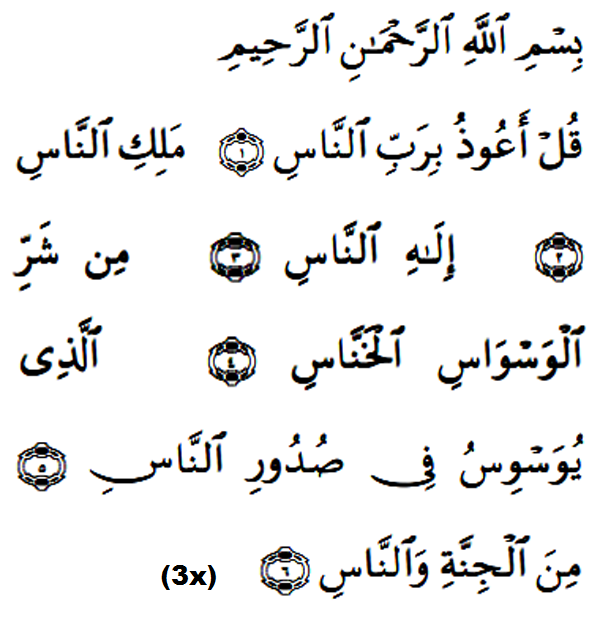

|
Terjemahan Dengan nama Allah yang Maha Pemurah lagi Maha Pengasih. (1)Katakanlah (Wahai Muhammad): "Aku berlindung kepada (Allah) Pemelihara sekalian manusia", (2)Yang menguasai sekalian manusia. (3)Tuhan yang layak disembah oleh sekalian makhluk (4)Dari kejahatan pembisik, penghasut yang timbul tenggelam, (5)yang melemparkan bisikan dan hasutan ke dalam hati manusia, (6)(iaitu pembisik dan penghasut) dari kalangan jin dan manusia." Fadhilat Wirid Abdullah bin Khubaib (RA) berkata: Di satu malam gelap dan hujan lebat, kami keluar mencari Rasulullah (SAW) untuk bersama - sama sembahyang dengannya dan kami temuinya lalu baginda bersabda sesuatu, maka saya tidak berjata apa. Kemudian baginda bersabda lagi hingga tiga kali, saya terus berkata: "Wahai Rasulullah, apakah yang saya hendak baca?" Maka baginda bersabda: "Bacalah surah Al-Ikhlas, Al-Falaq, dan An-Naas waktu petang dan pagi tiga-tiga kali nescaya memadai untuk engkau segala sesuatu." (Riwayat Abu Daud, Tarmidzi dan An - Nasa'ie) |

|